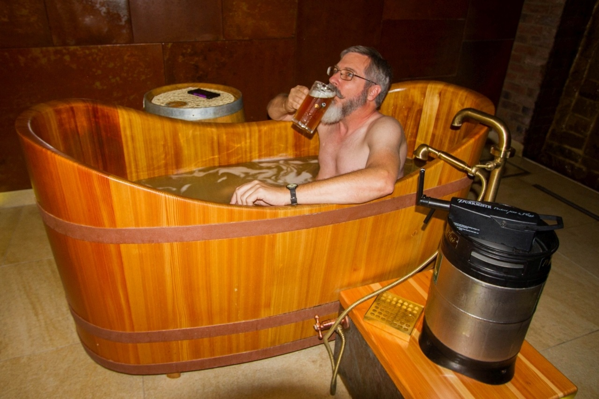
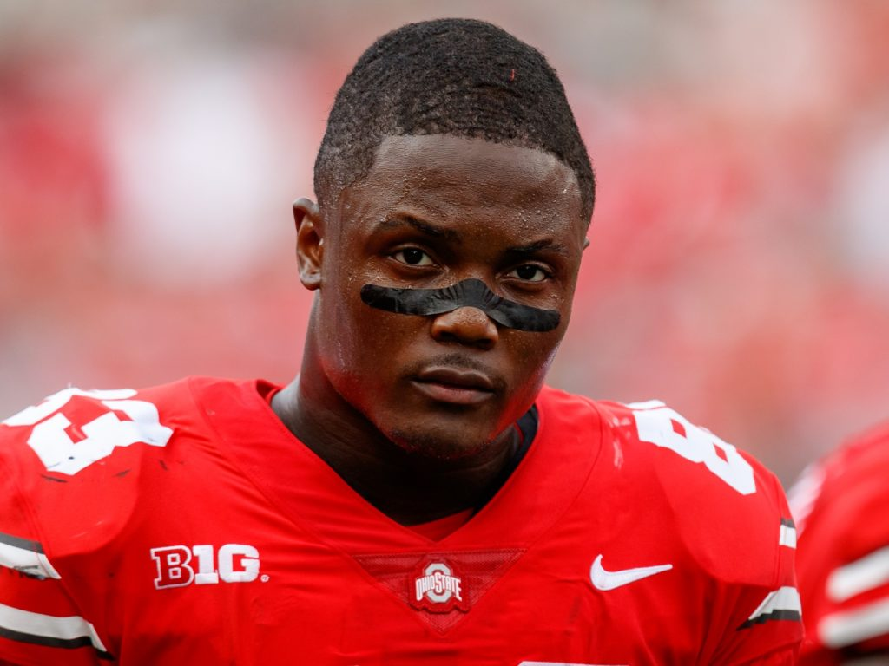
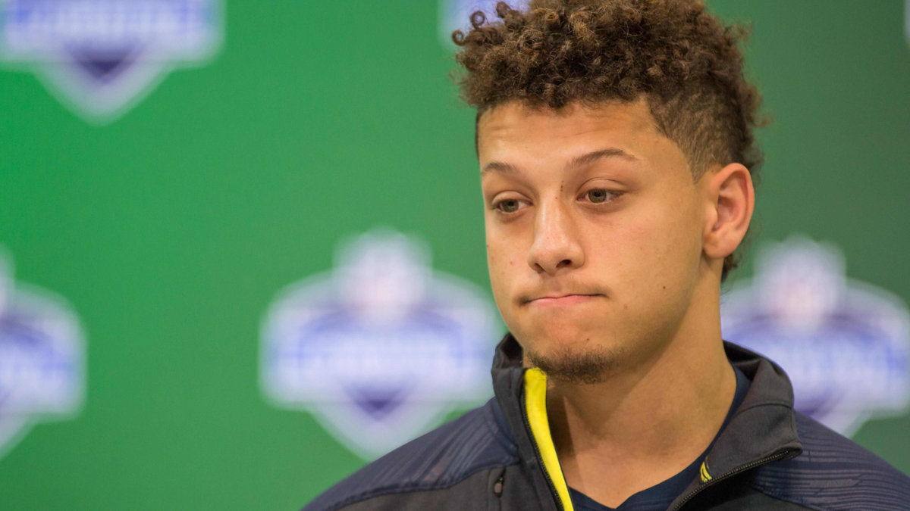
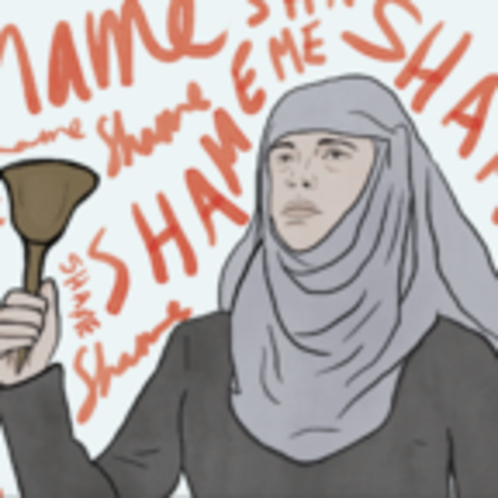

Brokeback Boolers -- Another week, another dominating victory for the Brokeback Boolers. They lead our league in record as the only 3-0 team, and they lead our league in points. As long as the band stays together and nobody gets hurt, this team’s embarrassing bench will never have to see the light of day, and the W’s will keep coming. Reporters were repulsed to find coach Clancy literally bathing in a tub of Genny Cream Ale after the victory.
Total Football -- It’s in the name, folks. What did you really expect? In another tight game, this team managed to rack up another big points total and come out with the victory, Josh Gordon leading the way with his dong hanging low in an Antonio Brown-less offense. Nothing can stop this freight train.
The Moneyballers -- Week 3 caught Kyle by surprise, as his first round pick for the second straight year was effectively removed for most of the season. He’s used to this, though--no other coach in the Bool League handles adversity this well, so we’re not too worried about him. Meanwhile, coach Mochrie is doing a fire-sale, and has reportedly offered his entire WR core for Peyton Barber in a desperate attempt to roster a healthy running-back.
Beane’s Boolers -- Landing themselves back in the top 4 are Beane’s Boolers with another boom week. That being said, he isn’t out of the doghouse yet--injures plague his roster and he’s still very capable of busting any given week. However, coach Encina has a secret weapon…. Scary Terry! Watch out, folks. This rookie’s just desperate to crack a starting lineup.
Roc Silly Boys -- The Silly Boys were finally exposed this week for the first time after a sleek 2-0 start. I don’t think anybody really expected them to keep winning, though, as their performances were less than stellar. Stevie Blue-Balls is gonna have to reconsider his roster if he wants to red-rocket back to the top of this division. (okay, I’m sorry about that one guys, that was pretty gross.)
Team James195 -- Like a phoenix rising from the ashes, Coach Moore has climbed from the dumpster of the rankings back into something somewhat respectable. His armada of wide-receivers was able to finally perform this week and carry his sorry running back group to victory. Will he fly too close to the sun, though? Tune in next week.
Ron Mexico -- I gotta give you credit, here. You almost got me this week. Coach Mungillo proved to the world that sometimes having a good roster isn’t enough--absolutely terrible management decisions can sometimes be just what you need to keep a team from success. Fans are calling for him to be fired after the benching of dynamite quarter-back Patrick Mahomes, with Patty reportedly even requesting a trade himself. Between that and Antonio Brown, this team is the center of drama, and players should stay far away.
Drunk Taylor Swift -- Coach Clancy’s sister’s brother sister decided to engage in a little showboating after taking an early lead about ten minutes into the first Sunday game. She now feels very silly, and we should all feel silly for her. That being said, unlike the teams below her in these rankings, her squad actually seems to be showing signs of life, so it’s certainly possible for her to reconstruct this ugly season still.
The Fournetteicatorz--With a team name officially instated, this team has decided to take a downward plunge and stop being competitive entirely. On the receiving end of the biggest blow-out of the week, things are starting to look hopeless in the basement of his division as he CONTINUES to hold Kareem Hunt. Somebody help this guy out.
Barkley Reincarnated--We were unable to reach Coach Glatz for an explanation of this downright embarrassing, awful performance this week. Still looking for their first win, this team is the Miami Dolphins of the Bool League. I can’t think of anything worse to say. Get your shit together. You benched Mark Ingram for Peyton Barber. SHAME.
